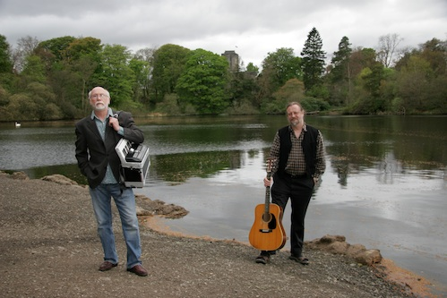

The Rise and Fall o' Charlie *
L'ascension et la chute de Charlie
Four modern songs from the CD by Alan Reid and Rob van Sante, released in 2009
Quatre chants modernes tirés du CD d'Alan Reid et Rob Van Sante, sorti en 2009

Alan Reid and Rob Van Sante
Tune - Mélodie
Four Sample clips (4 extraits): "Dear Tibbie", "Where are my Followers", "Where can we turn", "The Boy in the Man"
(* Allan disclosed to me that the title of the CD echoes the chorus of the famous Sound the Pibroch! song: "Rise and follow Charlie!)
|
To the author: Alan Reid, the author of these four songs was a member of "Battlefield Band" from 1969 to 2010, with whom he made almost 30 recordings. With his keyboards accompanying the bagpipes and the fiddle he did pioneer work, so that his influence is clearly felt on many Celtic musicians. He started in the 1980s writing songs that were included in the band's repertoire. In 1998 he released his first solo album "The Sunlit Eye" featuring new songs and tunes, and in 2001, a song and tune book "Martyrs, Rogues and Worthies". With his Dutch born pal, the guitarist and former Battlefield Band sound engineer, Rob van Sante, he recorded, two albums: "Under the Blue", in 2002 and "The Rise and Fall o' Charlie", in 2009, both featuring many of Alan's works. More recently they both released an album dedicated to the Sots born privateer John Paul Jones for which Alan composed the music. Source: Alan Reid and Rob van Sante Site. To the songs In "The Rise and Fall o Charlie", the authors mark the timeline of the Last of Stuarts in song and tune with more or less well-known Jacobite songs, whereby the positive image of the unfortunate young Prince has been tempered (staunch Jacobites would say "tampered with"): four songs were added that paint a not very flattering picture of an adventurous, thoughtless brat who became an egoistic bullying drunkard! But, like the present site, the CD ends up with the hopeful "Will ye no come back again!". There is a - conscious or unconscious? - family likeness between the tune of "Dear Tibbie" and the tune used by Robert Burns for his song "Tibbie Dunbar", a Scotch Measure composed by the Girvin (Ayshire) musician John McGill (c. 1707-1760), who was either a piper or a violoncello player, anyway a dancing master in Girvan in 1752 who composed a MS of country dance and reel instructions for his pupils. Tibbie Dunbar (to the tune Johnny McGill, arranged by Ch. Souchon) O wilt thou go wi me, sweet Tibbie Dunbar; O wilt thou go wi me, sweet Tibbie Dunbar; Wilt thou ride on a horse, or be drawn in a car Or walk by my side , O sweet Tibbie Dunbar? I care not thy daddie, his lands and his money, I carena thy kin sae high and sae lordly But say thou wilt hae me for better, for waur, And come in thy coatie, sweet Tibbie Dunbar. Source: "The Fiddler's Companion" (cf. Liens). |
A propos de l'auteur: Alan Reid, l'auteur de ces quatre chansons fut le membre principal du groupe "Battlefield Band" de 1969 à 2010, avec lequel il enregistra près de 30 disques. En utilisant le clavier électronique pour accompagner la cornemuse et le violon il sortait des sentiers battus, et l'on discerne facilement son influence chez plus d'un interprète de musique celtique. C'est dans les années 1980, qu'il commença à écrire des chansons destinées au répertoire du groupe. En 1998, il publia son première album en tant que soliste, "The Sunlit Eye" (Du soleil plein les yeux), avec toute une série de chansons et mélodies nouvelles et en 2001, un livre de chants avec partitions "Martyrs, Rogues and Worthies" (Les bons, les truands et les martyrs). Avec son copain d'origine hollandaise, le guitariste et ancien ingénieur du son du Battlefield Band, Rob van Sante, il enregistra deux albums: en 2002, "Under the Blue" et "The Rise and Fall o' Charlie" en 2009, deux disques où ses créations originales figurent en bonne place. Plus récemment ces deux artistes ont sorti un album consacré au corsaire d'origine écossaise John Paul Jones dont la partie musicale fut composée par Alan. Source: Site d'Alan Reid et Rob van Sante Site. A propos des chansons Dans "L'ascension et la chute de Charlie", les auteurs jalonnent la carrière du Dernier des Stuarts avec chansons et des mélodies tirées du répertoire des chants Jacobites plus ou moins connus. Ce faisant ils écornent (les Jacobites diront qu'ils "déforment") l'image romantique du malheureux jeune prince en mêlant aux pièces traditionnelles quatre chansons nouvelles qui montrent sous des aspects moins flatteurs un gamin écervelé et un aventurier qui devient au fil des ans un alcoolique brutal! Toutefois, comme sur le présent site, le CD se termine sur une note d'espoir, aux accents de "Ne reviendra-t-il jamais". On remarque - Est-ce voulu? Est-ce le hasard? - un air de famille entre la mélodie de "Dear Tibbie" (Chère Elise) et celle utilisée par Robert Burns dans sa chanson "Tibbie Dunbar", une gigue écossaise composée par le musicien originaire de Girvin (Ayshire), John McGill (vers 1707-1760), dont on ne sait trop s'il était sonneur de cornemuse ou violoncelliste. Ce qui est certain c'est qu'il était maître de danse à Girvan en 1752, année où il composa un manuscrit indiquant comment danser la contredanse et le reel à l'usage de ses élèves. Tibbie Dunbar (sur l'air Johnny McGill, arrangement: Ch. Souchon) O, me suivras-tu, douce Tibbie Dunbar? O, me suivras-tu, douce Tibbie Dunbar; Veux-tu mon cheval ou rouler dans un char Ou me suivre à pied, douce Tibbie Dunbar? Qu'importent ton père, et son or et ses terres, Qu'importent tes parents nobles et austères? Dis: "Je te veux pour le pire et le meilleur" Et viens en manteau, douce Tibbie Dunbar. Source: "The Fiddler's Companion" (cf. Liens). |

|
DEAR TIBBIE 1. - O Tibbie, dear sister, I well can remember Those stories as bairns we were tell'd by our father, We were wheeshed and affrighted by James the Pretender And, all the while, Jacobite men O Tibbie, the rebels are with us again. 2. And Tibbie, dear sister the throng was a-wonder To see them march in with their plaidies and banners The douse folk confused and the magistrates flustered And the Prince at the head o them all. O Tibbie, dear sister, was Charlie no braw? 3. - These Hielanders, sister, are gallus and gaudy: They make all our town lads seem pallid and scrawny. Charlie is dashing, and oh but he's bonny. Our "Bonny Prince Charlie" is he And my young lady friends, dear sister, agree. 4. - And, Tibbie, the Jacobites worship their master... But, for all o' his swagger and manners and bluster, I wonder how many more men he can muster. For we hear that he soon will be gone Hes marching tae London to grab for the throne. 5. I cannot but wonder and fear for his future. For he surely will fail in this foolish adventure And it's likely to end in his death or his capture. Dear sister, I scarce understand. It's a waste of a handsome and bonny young man. Such a bonny young man. A bonny young man. |
WHERE ARE MY FOLLOWERS? 1. The clouds scurry over the small hills behind us More swift than my army can cover a mile. The dull sky above us, a flat land before us And country folks stare with no hint of a smile. Carlisle fell before us and Manchester welcomed us Derby and London lie waiting in fear. But where are the men I was told they would flock to us? Where are my followers? Where? Tell me where! Please, tell me where? 2. When I was a child, I was fed with the stories Of my fathers followers, brave fighting men. Their sons and their daughters looked over the water In hopes that a Stuart would return once again. Now I am come over our throne to recover And the dogs of Hanover lie trembling, I hear. But where are my loyal and willing supporters? I wait for their coming. When will they appear? When will they appear? 3. In the splendour of Paris, the court and the palace Have pledged they will help and send soldiers to me. I look to the east and I look to the west, But no musket or trooper or cannon I see. The Houses of Europe are anxiously waiting For in our success they are ready to share. But I just need my followers, bonny Stuart followers! Where are my followers? Where, tell me where? Please tell me where? |
WHERE CAN WE TURN? Highland woman 1. What can we do now its over? Where can we turn? For no one can be sure What the future will bring. The women are stricken with sorrow, For the men that are all gone And we dont really know Where to turn, where to turn now. Hanoverian soldier 2. The gaudy hordes of Hieland men With gruesome looks and heathen tongue Advance on ilka Lowland town With savage swords and plaids, And, led by yon Italian loon, The dandy that would seize the throne, The rebel who would foist upon Us dreaded Stuart kings We could nae thole. Woman 3. They left them to flee and to scatter. The battlefield red, The smell of the wounded and dead And the howls of our men in the slaughter Invading our dreams night and day. And we dont really know Where to turn, where to turn, now. Soldier 4. We tracked their army day and night And each deserting Jacobite Was one less man we had to fight As battle day drew near. And when they charged against our guns, We fired at them and cut them down And soon we had them on the run, Across Drummossie Moor. The Lowlands cheered. Woman 5. All soldiers are hunted like vermin Like birds on the wing Our leaders are flown and are gone with the wind. They promised That theyd be returning. But we are alone And we dont really know where to turn, where to turn now. Soldier 6. Our victory was swift and just. The Young Pretenders cause is lost. And in disgrace hes fled to France, His tail atween his legs. The plough is lifted up again The beast are fed, the house is warm And every woman glad, her man Is safely hame in his bed And sleeping sound. Woman 7. The sound of the drum in the morning Resounds in the hills Disturbing the peace and the still. The world and the soldiers are coming When they enter the glen The life that we know will have come to an end. And where will we turn? Where will we turn? Where will we turn, now its over? |
THE BOY IN THE MAN 1. When I first met the Prince, he was troubled And his brow it was furrowed with pain But my heart was entranced by his bonny blue een And I fell for the boy in the man. He called me his doe and his deary He promised one day wed be one. I called him my Prince with the bonny blue een But he left to go fighting again. Chorus: A woman may suffer his anguish And be loyal as only she can She may make herself martyred and foolish When she falls for the boy in the man. 2. My bonny Prince sent me a letter And I hurried to be by his side I bore him a daughter with a bonny blue een But he never took me as his bride. When he drank hed be angry and bitter And too often he lifted his hand So I left with the lass with the bonny blue een For the boy was no longer a man. Chorus: A woman may suffer his anguish And be loyal as only she can She may make herself martyred and foolish When she falls for the boy in the man. 3. I once was his fair Clementina But now I am old and alone No more with the lad with the bonny blue een For hes neither a boy nor a man. Chorus: A woman may suffer his anguish And be loyal as only she can She may make herself martyred and foolish, When she falls for the boy in the man. When she falls for the boy in the man. |
|
CHERE ELISE 1. - Elise, chère sur, il faut qu'il te souvienne Des contes dont père berçait nos jours d'enfants: Jacques le Prétendant, notre espoir, notre peine, Et des Jacobites d'antan. Ma sur, les rebelles sont là maintenant! 2. Elise, on sait combien notre peuple s'étonne Lorsqu'il voit s'avancer ces bannières, ces plaids; Braves gens en émoi; les magistrats qui tonnent; A leur tête le prince aimé. Ma sur, Charles n'a-t-il point été parfait? 3. Qui dit "Highlands", dit "fière allure" et "fantaisie" Les villageois d'ici, semblent bien décharnés. Outre l'allure, vois le maintien de Charlie! Ah! le surnom de "bien-aimé" Que lui donnent mes amies est mérité! 4. - On sait la dévotion qu'éprouvent pour leur maître Les Jacobites. Mais la prestance n'est rien. Je doute qu'il voie de nouveaux renforts paraître: Bientôt, dit-on, il sera loin, Il part pour Londres chasser le souverain. 5. Je ne saurais cacher mes doutes, ni ma crainte Qu'il ne paye fort cher ces exploits insensés Auxquels auront mis fin la mort ou la contrainte Et je m'étonne, en vérité, Qu'ainsi son charme et son talent soient gâchés. Soient ainsi gâchés. Soient ainsi gâchés. Trad. Christian Souchon (c) 2012 |
OU SONT MES PARTISANS? 1. Avant que mon armée ne parcoure à grand peine Une lieue, les nuées auront franchi les monts. Le ciel gris sur nos têtes. Devant nous la plaine; Partout des paysans aux visages grognons. Carlisle tint tête. Manchester fit fête. Derby, puis Londres redoutent à leur tour. Mais le temps s'écoule! Mais où sont ces foules De partisans qu'on me promettait toujours? Les verrai-je un jour? 2. Lorsque j'étais enfant, on me gavait de rêves: Les amis de mon père accourant aux drapeaux. Leurs filles et leurs fils attendant sur la grève Espérant qu'un Stuart viendrait vers eux bientôt. Que nul ne s'étonne! En quête du trône Me voilà: Georges n'a qu'à bien se tenir! Mais le temps s'écoule! Ces loyales foules De partisans vont-elles enfin venir? Vont-elles venir? 3. Sous les ors du palais à Paris que d'intrigues! Combien de promesses de soutien, de soldats! J'ai beau scruter la plaine: à l'ouest, à l'est, le vide, Ces mousquets, canons, cavaliers ne viennent pas! L'Europe prudente, reste dans l'attente: Au secours de la victoire on veut voler. Mais le temps s'écoule! Où donc sont ces foules D'amis qu'on avait promises aux Stuarts! Il se fait tard! Trad. Christian Souchon (c) 2012 |
OU DONC ALLER? Une femme des Hautes Terres 1. Tout est fini! Qu'allons-nous faire? Où donc aller? Personne ne sait de Quoi sera fait demain. Nous sommes folles d'inquiétude: Plus un mari n'est là. Comment dans cette solitude Savoir où diriger nos pas? Un soldat hanovrien 2. Tous ces braillards des Hautes Terres A l'air féroce, aux mots abscons, Avec leurs plaids, leurs cimeterres Vers les Lowlands s'en vont, Un sot d'Italien à leur tête, Qui tend au trône un traquenard: Ces rebelles veulent y mettre Un de leurs rois Stuart... Quel cauchemard! La femme 3. Voilà que tous fuient et s'égaillent Loin du sang, de la puanteur Des morts sur le champ de bataille. Et nos hommes qui hurlent. Cette horreur, Nuit et jour, envahit nos rêves. Nous ne savons toujours pas Où nous dirigerons nos pas. Le soldat 4. Nous fûmes toujours à leurs trousses: Plus ils désertent leurs drapeaux Moins nous en avons à combattre. L'affaire est pour bientôt. Ils chargent contre la mitraille! C'est autant qui furent fauchés! Ils abandonnent la bataille, Le Bas Pays était Enthousiasmé. La femme 5. Voyez ces soldats qu'on pourchasse Comme des oiseaux. Nos chefs fuient. Tout part à vau-l'eau Tout s'en va. Ils promettent De revenir un jour. Mais nous sommes là Et ne savons toujours pas Où nous porteront nos pas. Le soldat 6. Succès rapide et mérité: Charles Stuart, peine perdue, Retourne en France, dépité: Sa cause est entendue! Tous à vos charrues, laboureurs! Mettez des bûches au foyer! Femmes, souriez au bonheur De voir dormir en paix L'époux aimé! La femme 7. Mais le son des tambours s'entête Et résonne au loin Troublant la paix, quels maux s'apprêtent? Ces soldats? C'est le monde qui vient. Qu'ils entrent dans la plaine: De notre vie d'antan, il ne restera rien. Et où donc aller? Où donc aller? Où donc aller? Tout a pris fin. Trad. Christian Souchon (c) 2012 |
DANS L'HOMME, L'ENFANT 1. J'ai connu le Prince dans la peine, Les soucis ridaient son front brûlant Fascinée que j'étais par ses charmants yeux bleus J'aimais non l'homme en lui, mais l'enfant. Il disait "Mon amie, sois certaine Que je demeurerai près de toi." Moi, je l'appelais "mon Prince aux charmants yeux bleus", Mais il m'a quittée pour le combat. Refrain: La femme qui des maux console Et qui chérit fidèlement, Souffre le martyre, elle devient folle Quand dans un homme elle aime l'enfant. 2. Mon beau prince écrivit une lettre Et j'ai, pour le rejoindre, accouru. Nous eûmes une fille aux charmants yeux bleus. De m'épouser il ne parlait plus. La boisson le rendait irascible. Souvent il levait la main sur moi Je partis avec ma fille aux charmants yeux bleus Loin de cet inhumain enfant-là. Refrain: La femme qui des maux console Et qui chérit fidèlement, Souffre le martyre, elle devient folle Quand dans un homme elle aime l'enfant. 3. Moi qui fus sa belle Clémentine, Me voilà vieille et seule à présent Je n'ai plus près de moi l'homme aux charmants yeux bleus Est-ce un homme? Il n'est plus un enfant. Refrain: La femme qui des maux console Et qui chérit fidèlement, Souffre le martyre, elle devient folle, Quand dans un homme elle aime l'enfant. Oui, quand dans l'homme elle aime l'enfant. Trad. Christian Souchon (c) 2012 |
Four sample clips